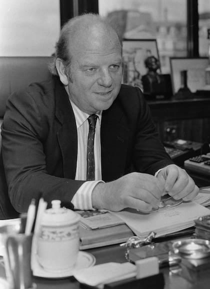

Biografía
Bartolomé Mitre (1821-1906) fue una figura fundamental en la historia argentina. Se destacó como político, militar, periodista, historiador y escritor. Fue presidente de la Nación Argentina entre 1862 y 1868, consolidando la organización nacional y promoviendo la educación y la cultura.
El mismo Mitre fue un ferviente defensor de la educación y la cultura, y su legado perdura en la Argentina contemporánea.
Su obra más conocida es "Historia de Belgrano y de la independencia argentina", que sigue siendo una referencia en los estudios sobre la independencia de Argentina.
Mitre también fue un destacado periodista y fundó varios periódicos, incluyendo "La Nación", que se convirtió en uno de los principales diarios de Argentina.
A lo largo de su vida, Mitre recibió numerosos reconocimientos por su labor en pro de la educación y la cultura en Argentina.
Su legado perdura en la historia argentina y su influencia se siente en la política y la cultura del país.

Contribuciones y Legado
Bartolomé Mitre fue un defensor de la educación y la cultura, promoviendo la creación de instituciones educativas y culturales en Argentina. Su legado perdura en la historia argentina y su influencia se siente en la política y la cultura del país.
Mitre también fue un destacado periodista y fundó varios periódicos, incluyendo "La Nación", que se convirtió en uno de los principales diarios de Argentina.
A lo largo de su vida, Mitre recibió numerosos reconocimientos por su labor en pro de la educación y la cultura en Argentina.
Legado en la Educación
El legado de Bartolomé Mitre en la educación argentina es innegable. Su impulso a la creación de escuelas y universidades sentó las bases para un sistema educativo más inclusivo y accesible.
Mitre creía firmemente en la educación como motor de progreso y desarrollo, y su influencia se puede ver en las políticas educativas que se implementaron en las décadas posteriores a su presidencia.
Su legado en la educación sigue siendo relevante en la actualidad, y su visión de una Argentina educada y culta continúa inspirando a generaciones.
Legado en la Cultura
El legado cultural de Bartolomé Mitre es igualmente significativo. Su labor como historiador y escritor contribuyó a la construcción de una identidad nacional en Argentina.
Mitre promovió la investigación histórica y la difusión del conocimiento, sentando las bases para el desarrollo de la historiografía argentina.
Su obra literaria y periodística sigue siendo estudiada y valorada en la actualidad, y su influencia se extiende a diversas áreas del saber.
Legado en la Política
El legado político de Bartolomé Mitre es igualmente importante. Como presidente de Argentina, promovió políticas de modernización y desarrollo que sentaron las bases para el crecimiento del país.
Mitre también fue un defensor de la democracia y los derechos civiles, y su influencia se puede ver en las instituciones políticas que se establecieron en Argentina durante y después de su mandato.
Su legado en la política argentina sigue siendo relevante en la actualidad, y su visión de un país más justo y equitativo continúa inspirando a líderes y ciudadanos.
Legado en la Sociedad
El legado social de Bartolomé Mitre es igualmente significativo. Su compromiso con la justicia social y la igualdad de oportunidades ha dejado una huella en la conciencia colectiva de la sociedad argentina.
Mitre abogó por los derechos de los más desfavorecidos y promovió políticas que buscaban reducir las desigualdades sociales.
Su visión de una sociedad más equitativa y solidaria sigue siendo un referente en la lucha por los derechos humanos en Argentina.
Reconocimientos y Homenajes
A lo largo de su vida y después de su muerte, Bartolomé Mitre recibió numerosos reconocimientos y homenajes por su labor en pro de la educación, la cultura, la política y la sociedad argentina.
Su legado perdura en monumentos, calles, plazas y edificios que llevan su nombre en diversas ciudades de Argentina.
Mitre también es recordado en la literatura y el arte, donde su figura ha sido representada en diversas obras que celebran su vida y sus contribuciones a la nación.
Mitre y creación del diario La Nación
Bartolomé Mitre fue uno de los fundadores del diario La Nación, que se estableció en 1870 y se convirtió en uno de los principales periódicos de Argentina. Su objetivo era crear un medio de comunicación que promoviera los valores democráticos y el progreso del país.
Bajo su dirección, La Nación se destacó por su enfoque en la educación, la cultura y la política, convirtiéndose en un referente para la sociedad argentina.
El diario ha jugado un papel importante en la historia del periodismo en Argentina y sigue siendo una voz influyente en la actualidad.
Final
El legado de Bartolomé Mitre es un testimonio de su compromiso con la construcción de una Argentina más justa, equitativa y solidaria. Su vida y obra continúan inspirando a generaciones de argentinos a luchar por un país mejor.
Mitre es recordado como un prócer argentino que dejó una huella imborrable en la historia del país, y su legado sigue siendo un faro de esperanza y progreso para la nación.
Su figura se erige como un símbolo de la lucha por la justicia y la igualdad, y su legado perdura en la memoria colectiva del pueblo argentino.